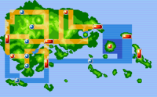

A região de Hoenn é o cenário central dos jogos Pokémon Ruby, Sapphire e Emerald, além de seus remakes Omega Ruby e Alpha Sapphire. Localizada em uma região inspirada em Kyushu, no Japão, Hoenn se destaca por suas paisagens variadas, incluindo ilhas tropicais, florestas densas, desertos e vastos oceanos, oferecendo aos jogadores uma experiência de exploração única e diversificada. O jogador começa sua jornada em Littleroot Town, onde recebe seu primeiro Pokémon do Professor Birch — Treecko, Torchic ou Mudkip — que define a estratégia inicial para enfrentar os ginásios e rivais da região. Littleroot Town também serve como ponto de introdução à mecânica de captura, batalhas e rotas aquáticas, que são mais presentes em Hoenn do que em outras regiões. Hoenn possui cidades distintas e ginásios desafiadores, como Rustboro City, lar do líder Roxanne, especialista em Pokémon do tipo Pedra; Mauville City, com Wattson, mestre em Pokémon do tipo Elétrico; e Sootopolis City, onde se encontra o ginásio de Wallace (Emerald) e a entrada para a batalha com o lendário Kyogre ou Groudon, dependendo da versão. Cada cidade oferece desafios únicos e oportunidades de evolução estratégica.
